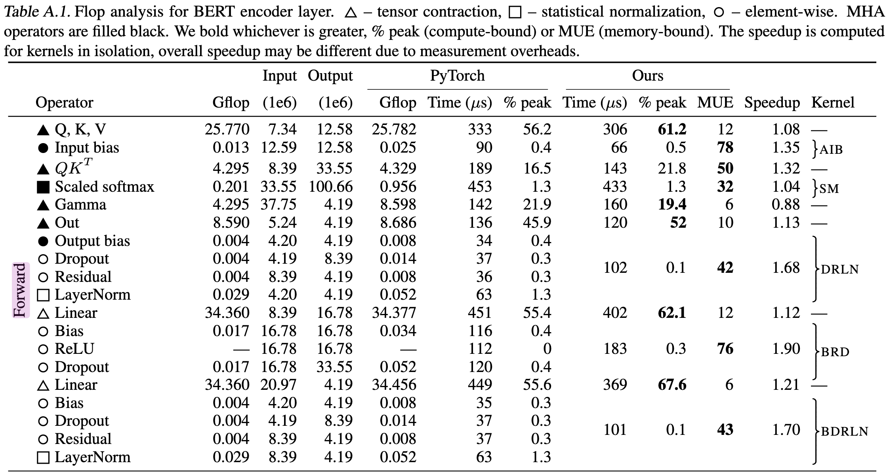

This article presents detailed few-principles reasoning about large language model inference performance, with no experiments or difficult math. The amount of understanding that can be acquired this way is really impressive and practical! A very simple model of latency for inference turns out to be a good fit for emprical results. It's helped me make better predictions and form better explanations about transformer inference.
This post assumes some prior knowledge about transformers, say at having understood most of The Illustrated Transformer but not having internalised all of it. Familiarity with this parameter counting post which I developed along with this one may also be useful.
Table of Contents
- kv cache explains the performance improvement of caching self-attention vectors as a part of inferencing, as well as the possible tradeoffs and capacity costs
- capacity takes the storage cost of kv cache and connects it to the storage cost of model weights and what capacity means for performance.
- model parallelism builds up an understanding specifically of tensor parallelism to clearly identify the cost of communication
- latency calculations pulls understanding from other concepts to create equations that serve as floorlines for inference speed.
- batch sizes discusses what impact batch size has on performance and what sizes may be optimal.
- flops counting steps through the transformer blocks and identifies which operations meaningfully contribute to flops speed.
- intermediate memory costs covers how the activations take additional memory and what that memory bandwidth costs looks like from some real benchmarks.
- comparing against real benchmarks compares what we can calculate to what Nvidia FasterTransformer benchmarks report and identifies the discrepancies.
kv cache
For sampling, transformer inference consists of processing a provided prompt/context (which can happen in parallel), and then sampling additional tokens one by one (this is where the autoregressiveness surfaces). In the sampling, the transformer performs self-attention, which requires the kv values for each item currently in the sequence (whether it was prompt/context or a generated token). These vectors are provided a matrix known as the kv cache, aka past cache (the open source GPT-2 implementation called it past). The past cache would be shaped like [batch, 2, num_heads, seq_len, features].
The purpose of this is to avoid recalculations of those vectors every time we sample a token. With the computed \(k, v \) values, we can save quite a bit of computation at the cost of some storage. Per token, the number of bytes we store is
The first factor of 2 is to account for the two vectors, \(k\) and \(v\). We store that per each layer, and each of those values is a \( n_\text{heads}\times d_\text{head}\) matrix. Then multiply by 2 again for the number of bytes (we'll assume 16-bit formats throughout the post).
The weights that we multiply by the token embeddings are \(W_\text{k}, W_\text{v} \in \mathbb{R}^{d_\text{model}\times d_\text{model}}\) and then each token embedding is \(t_\text{e}\in \mathbb{R}^{1\times d_\text{model}}\). So then the flops to compute \(k\) and \(v\) for all our layers is
We multiply \(t_\text{e}\) by \(W_\text{k}\), which takes \(2 \cdot {d_\text{model}}^2\) flops. We have another factor of 2 as we do that twice, once each for \(k\) and \(v\) and then repeat for \(n_\text{layers}\).
How many flops in a matmul?
The computation for a matrix-vector multiplication is \(2mn\) for \(A \in \mathbb{R}^{m\times n}, b \in \mathbb{R}^{n}\). A matrix-matrix is \(2mnp\) for \(A \in \mathbb{R}^{m\times n}, B \in \mathbb{R}^{n \times p}\). The \(mn\) factor makes a lot of sense, and the two comes from the fact that a matmuls are composed of multiply(1)-add(2) operations. More in these lecture notes.
This means for a 52B parameter model (taking Anthropic's, where \(d_\text{model} = 8192\) and \(n_\text{layers} = 64\)). The flops are
Say we have an A100 GPU, which does \(312\text{e}12\) flops per second and \(1.5\text{e}12\) bytes per second of memory bandwidth. The following are numbers for just the kv weights and computations.
Flops vs Memory Boundedness
Flops vs memory boundedness is something we deal with a lot for transformer inference, but also in deep learning optimisation in general. To do the computations we do, we need to load weights which costs memory bandwidth. We assume (correctly, this has been very well optimised) that we can start the computations while we load the weights. Flop bound would then mean that there is time when nothing is being passed through memory, and memory bound would mean that no floperations are occuring. Nvidia uses the term math bandwidth which I find really cute. Technically, this delineation exist per kernel but can be abstracted to exist for groups of operations.
None of the model architecture matters anymore — we get a distinct ratio here of 208 given this hardware specification. This means that if we're going to compute kv for one token, it'll take the same amount of time to compute for up to 208 tokens! Anything below, we're memory bandwidth bound. Above, flops bound. If we used the rest of our weights to do a full forwards pass (run the rest of the transformer) on our context, it's also 208 (both the numerator and denominator get a factor of 6 added). This will be reasoned thoroughly in future sections. The intersection of the below diagram is at 208, though in reality the memory line does have a slight slope due to memory cost of intermediate calculations (discussed in the last section).
For a 52B model full forwards pass, that's \(12\cdot 2 \cdot n_\text{layers} \cdot {d_\text{model}}^2 / 1.5\text{e}12 \approx 69\) milliseconds for up to 208 tokens (in practice, we'd use four GPUs in parallel so it would actually be ~17 milliseconds, more in following sections). If we had 416 (double) tokens in the context, then it would take twice as long, and 312 tokens would take 1.5 times as long.
Calculating for a kv cache token is exactly 1/6th of the compute of passing the token through the model. In general, these forwards passes (what we experience in getting logits, embeddings and training) are very cheap because of the parallelism that is possible as opposed to sampling where we're forced to read through all the weights for each token and do the autoregression.
This doesn't mean that 1/6th of the time is saved! Let's assume we are flops bound. Then at each sample step, we save \(2 \cdot 2 \cdot n_\text{tokens} \cdot n_\text{layers} \cdot {d_\text{model}}^2 \div 312\text{e}12\) flops while the decoding steps costs \(2 \cdot 12 \cdot n_\text{layers} \cdot {d_\text{model}}^2 \div 312\text{e}12\). Thus at each step we save 1/6 of the flops time multiplied by the number of tokens in our sequence (big!) — which increases as we sample tokens. It is the case that without a kv cache, sampling would be quadratic in time complexity as we increase the number of tokens.
This is not the whole story (given overheads and tradeoffs associated with storing this cache). If we're serving small batches we may be memory bandwidth bound rather than flops, in which case we won't even want to use the past cache and will instead happily do recomputations, spending the flops (we'll already be paying the memory cost to do our sampling).
capacity
We have a solid idea of the two things we store in our GPUs — kv cache and weights. GPU capacity does come into play for transformer inferencing performance and we have all the understanding we need to evaluate that now!
Nvidia A100 GPUs (which are generally speaking, the best GPUs we can get for inference) have a standard of 40GB of capacity. There are ones with 80GB and higher memory bandwidth (2e12 instead of 1.5e12) but they aren't available with any large cloud providers yet which means they aren't real to me!
Given the parameter count, we can multiply by two to get bytes. So to calculate the size of the weights for a 52B model.
Oh no! This doesn't fit in one GPU! We'd need at least three GPUs just to have all the weights loaded in (will discuss how to do that sharding later). That leaves us \(120-104 = 16GB\) left for our kv cache. Is that enough? Back to our equation for kv cache memory per token, again with a 52B model;
And then we'd do \(16/0.002 \approx 8000\) tokens can fit into our kv cache with this GPU set up, or that we could do up to a batch size 4 where each request has up to 2048 tokens (and higher sizes for less tokens).
This sucks because we would like to be able to do higher batch sizes, but are capacity limited! Higher batch sizes are more efficient in terms of how much GPU time it takes to process the same request. On the other hand, at batch sizes this low we're bound to be memory bound, and should forego the kv cache and just pay the flops cost instead.
For four GPUs, we'd get \(56/0.002 \approx 23000\). We definitely want to go for the four GPUs since we'll want to be able to do higher batch sizes, and it's silly to to divide powers of two over three GPUs. But it's not just batch size! If we have high volume, then we'd have multiple instances of our models. We approximately want each instance to be able to do as large as a batch size as possible, as we pay the cost of storing the weights anyway.
There's some extra space used by intermediate calculation steps, but they're negligible.
model parallelism
I'm not going to build up full understanding of model parallelism and all the implementation details, because many have done so. But we will build out the parts of the understanding that are useful to figure to make performance decisions and calculate communication costs!
The outcome of model parallelism, is that the cost of passing all the weights through through memory and the flops are all divided over the degree (number of accelerators we use).
We will assume tensor parallel (model parallel) where we will split down the middle of the model. Each accelerator will execute as much as it can with its shards of the weights and will communicate whenever synchronisation is required. A more naive way is pipeline parallel, where each GPU will hold onto a fraction of the layers. This does successfully even out the weight loading cost, but has the obvious silly that all but one GPU will be idling! In training you could pipeline through it (as the first batch moves onto the next GPU, start on a new batch on the first GPU) but it doesn't work out for a single sample request (though you could still do it for multiple requests). Pipeline also doesn't exhaust the memory bandwidth, which is actually ok if you're flops bound anyway. The only place where pipeline parallel does better is communications. A pipeline parallel model would communicate \(d_\text{model}\) per accelerator, while a model parallel does \(N\cdot d_\text{model}\) per layer where \(N\) is the number of accelerators.
Here we introduce the last constant for our A100 GPUs which is a communication bandwith of 300GB/s. The doc marks it as 600GB/s because Nvidia is adding up 300GB/s into each chip and 300GB/s out simultaneously rather than using a bidirectional number (which will be more intuitive for our calculations).
In this diagram, we start by following the yellow brick road where we insert our token embeddings into the bottom of the model. The purple boxes outline how our weights would be split across the accelerators, and we work with an extremely tiny model so we can draw everything to scale. A general idea is that if we have two matrices \(X\) and \(Y\) we can shard both of them and multiply the shards. This doesn't actually complete the matmul of \(X\cdot Y\), and an easy way to tell (other than our ability to multiply matrices) is that if we concatenated the result of multiplying the shards, we get too big of a matrix. Instead, we would want to communicate, compute a shard sum, communicate that sum back out and then concatenate for the output of \(X \cdot Y\).
For attention the parallelism is intuitive from the fact that we have multiple heads. We go through most of the attention layer without communication because our attention heads are concatenated to multiply by \(W_o\). After we multiply by \(v\), we multiply the result by our shard of \(W_o\) to get a shard of \(o_s \in \mathbb{R}^{d_\text{model}\times n_\text{heads}/N}\). Then each accelerator will communicate its own shard to all the others, and all the others will communicate their shards back. This is \((N-1)d_\text{model}/N\) of comms cost. Each accelerator will do an even share of the addition to get the output projection, then do the same communication they did last time and the individual hosts will do the concatenation (approximately instant).
The MLP layer is by nature very similar! Just like we have \(W_o\) to project our multi-headed attention results back down to a vector of length \(d_\text{model}\), we have \(W_1\in \mathbb{R}^{4\times d_\text{model}}\) and \(W_2\in \mathbb{R}^{d_\text{model}\times 4}\) to make a dimension 4 times larger and then project it back down. The same two communications are done at the end of the MLP.
Ultimately we do \(4 \cdot (N - 1)d_\text{model}/N\) bytes of communication. The kv cache is split across heads by GPU.
latency calculations
We've discussed the capacity fairly thoroughly, mapped out comms in the model parallelism section and discussed general compute steps. Now we'll build it into equations that estimate latency!

Our latency calculations are mostly about the flops vs memory boundedness. If we have a small number of multiplies to do per parameter, then maybe we'll be throttled by memory bandwidth. Flops are increased by both batch size and number of parameters, while memory is only increased by number of parameters.
For comms, it's not about boundedness, but rather about adding a latency term and a throughput term (the 300GB/s). Something tricky about the latency side of this figure is that it's not reported, so the best I can do is guess "approximately small", which is approximately 8 microseconds per message sent as found in this Citadel paper but it's for V100 NVLink.
Because of the compute factors, to calculate the latency of a single token decoding step we'd have two formulas - one for memory bandwidth bound (small batch) and another for flops bound (large batch). For large batch, we'll drop the latency factor for communications.
Equations for a small batch (say 1, so we can drop the batch factor) would be; (where \(N\) is the number of accelerators and \(P\) is the number of parameters and \(b\) is "byte" as a unit) There is \(2 \cdot P\) because we need to pass all the parameters through the memory, and each parameter is two bytes. \(A_\text{bm}\) is the accelerator memory bandwidth, and this cost is split across accelerators. For comms, we have \( 4 \cdot n_\text{layers} \) communications per layer, and the latency per each request. Comms will usually come out to be relatively small so for the compute bound case we won't need to pay attention to it anyway. There's also a throughput cost in comms which also rounds away.
There's another sometimes-significant factor here which is the read time for the kv cache, which I'll leave out of the equation now since it depends on number of context tokens, which can even vary within a batch and total number of tokens we want to sample. This would be calculated as memory bandwidth time. Another missing memory bandwidth time is the read of the unembeddings to calculate logits at each sampling step, which is \( \in \mathbb{R}^{d_\text{model}\times n_\text{vocab}}\).
As previously mentioned, the memory does not actually stay constant, rather some additional memory is used per batch for intermediate activations. The reason we don't factor this in is simply because it's hard to count as it varies a lot by the software stack, compiler optimisations, etc.
For large batches (say 512), where \(B\) is the batch size;
Where \(A_f\) is the flops of the accelerator and \(A_c\) is the comms bandwidth. We do \(2\cdot P\) flops of operations, which can be intuited by the fact that we matmul through all the parameters, and as mentioned earlier, a matrix-vector multiplication is \(2mn\) given \(A \in \mathbb{R}^{m\times n}, b \in \mathbb{R}^{n}\).
For comms, we see the four (I'll round that \(N-1\) factor to \(N\)) communications each of a \(d_{model}\) size vector per layer as explained in the model parallelism section. We swapped out the latency calculation for a throughput one. Then it's all divided by the comms bandwidth.
Let's play with a larger model, a Gopher sized 260B model on 16 GPUs. For a small batch, it's 22 ms per token generated. The throughput cost for the comms which we can calculate with the equation for large batch is approximately 35 microseconds, assuring us that it was safe to drop.
For a large batch of 512, for a total of 53 ms per token generated (per batch, so in the 62ms 512 tokens are generated). The latency cost on comms here would've also been 3ms (latency is not multiplied by batch as the message can be prepared together) which is somewhat significant to drop but it's fine if we assuming parallel comms and compute.
The higher value between the comms and compute is taken as we're assuming that it's parallel. Thus, we would want to avoid having comms being greater than compute (this is the mechanism that prevents us from approaching latency zero as we insert more chips, eventually the comms will start taking more and more time). It's not guaranteed that all systems will do this in parallel, and certainly not perfectly in parallel.
These numbers are definitely much lower than what we can get with real sand, as it assumes optimal hardware usage, doesn't factor in softmaxes, assumes zero comms latency and ignores many other smaller factors. Nonetheless, all the reasoning behind this math is useful for thinking about where to go optimise performance what deltas incoming optimisations will cause.
batch sizes
Batch size is an important factor of our performance, especially towards understanding performance for specific usages.
In the previous section, we have two calculations for when something memory bandwidth bound versus flops bound. To figure out which is at play we can compare these numbers;
We're dealing with the same ratio we found in the kv cache section. The min batch size for memory bandwidth bound is \(A_\text{bw}/A_f = 208\). This is a handy ratio! If we have the load to do it, we prefer flops bound as it's more compute efficient. Though it's also the case that if we're flops bound, making the batch size larger doesn't mean anything is getting faster.
To calculate when the capacity goes from mostly kv cache to mostly weights is trivial, and also isn't a binary in the same way (nothing special happens when your kv cache starts taking up more memory than your weights). Nothing special really happens with comms either. At some point in increasing the batch size, the throughput starts dwarfing the latency so we dropped that factor. As observed previously, the latency becomes insignificant much later (our 512 batch on 52B communication cost was still 11% latency).
Something oversimplified about comms is that it happens at four different steps, which means we don't just want our compute time to be longer than our comms time, we want it to be the case at each step (if we can parallelise the compute and comms). For that, we have a weirder ratio: flops per byte of comms. Here's a nice chart of our computations, which will also be useful in the section below.
| \(q, k, v\) | \(o\) | \(w_1\) | \(w_2\) | |
|---|---|---|---|---|
| flops | \(3B({d_\text{model}}^2)\) | \(B({d_\text{model}}^2)\) | \(4B({d_\text{model}}^2)\) | \(4B({d_\text{model}}^2)\) |
| bytes of comms | \(B(d_\text{model})\) | \(B(d_\text{model})\) | \(B(d_\text{model})\) | \(B(d_\text{model})\) |
| flops/byte | \(3(d_\text{model})\) | \(d_\text{model}\) | \(4(d_\text{model})\) | \(4(d_\text{model})\) |
\(312\text{e}12 \div 300\text{e}9 = 1040\), which is our flops per byte of comms for our A100s. We want the values in the last row to be larger than our hardware flops per byte so that we stay flops bound (assuming we are not memory bound here). For any model with an embedding dimension over 1024 (per chip), we're safe! For 512, it's a little awkward.
A low-load API may result in smaller batch sizes, leading to reasonable decisions like dropping the kv cache. If an API had the load for large batches it would probably want to serve the lowest batch size that gets flop bound even if there is capacity left so that it could optimise for per-request-latency. In say mass-inferencing jobs like AlphaCode we might want to insert as many chips as we can and then do the largest batch we can do with that capacity. I say "may" a lot here but I actually think these are absolute and all three kinds of cases.
flops counting
Previously;
We do \(2\cdot P\) flops of operations, which can be intuited by the fact that we matmul through all the parameters.
This is correct reasoning, but we can break it down by walking through all the transformer steps and check that we get \(2P\).
The following calculations are per token, per layer. I describe \(W_q, W_k, W_v \in \mathbb{R}^{d_\text{model}\times d_\text{model}}\) where it's more accurate to say we have \(W_q^i, W_k^i, W_v^i \in \mathbb{R}^{d_\text{model}\times d_\text{head}}\), where \(i\) goes up to \(n_\text{heads}\). But for the sake of calculating latency, I simplify \(W_q, W_k, W_v\) to include all the heads.
- Computing qkv
- Multiply \(t_e \in \mathbb{R}^{1\times d_\text{model}}\) by \(W_q, W_k, W_v \in \mathbb{R}^{d_\text{model}\times d_\text{model}}\)
- Flop count: \({2 \cdot 3 \cdot d_\text{model}}^2\)
- Calculate z
- This is \(\text{softmax}((q\cdot k)\div\sqrt{d_\text{head}}) \cdot v = z\)
- No matrices are multiplied, the number of flops is some factor of \(d_\text{model}\).
- Multiply by the output projection matrix
- Multiply \(W_o \in \mathbb{R}^{d_\text{model}\times d_\text{model}}\), by \(z \in \mathbb{R}^{d_\text{model}\times1}\)
- Flop count: \(2 \cdot {d_\text{model}}^2\)
- Feed-forward
- We have our MLP weights \(W_1 \in \mathbb{R}^{4\times d_\text{model}}, W_2 \in \mathbb{R}^{d_\text{model}\times 4} \) for two linear transformations (there's a ReLU in the middle, which small).
- Flop count: \(2\cdot 8 \cdot {d_\text{model}}^2 \)
- Some other things
- There are typically layernorm that happen after each attention, where the weights there are a vector of length \(d_\text{model}\).
- There's another linear layer and then a softmax that sits on top, which is our output (token) embedding or unembedding or de-embedding or embedding\(^{-1}\).
- The original transformer has a cosine absolute positional encoding scheme, which is an addition operation on the token embedding.
Adding up all the flops!
Subbing in our 8192 model, we should get about 100B flops;
103079215104 over two is about 51.5B. We're a lil under (we get 51.5B instead of 52B) but that's because token (un)embeddings are nearly a billion parameters. It would be reasonable to do the latency calculations with \(2\cdot 12\cdot n_\text{layers} \cdot {d_\text{model}}^2\) instead of \(2\cdot P\), but it's less than a 2% difference.
What about the the calculation of \(z\) and all the other steps I didn't count? Those are all vector-vector (or even vector-scalar) operations, so they are built around a factor of \(d_\text{model}\) rather than \({d_\text{model}}^2\). Even if we had 100 of these operations per layer, it would come out to a hundred million flops, which is 0.1% of the number of flops we counted.
intermediate memory costs
Data Movement Is All You Need (which is mostly about optimising low level data movement for transformers, and isn't a particularly relevant read) has a nice way of classifying operations. We have tensor contractions, which are the big matmuls we've mostly cared about (including the linear layers). Then there are statistical normalisations, the softmax and layernorm. Finally, which this post has completely ignored till now are element-wise operators, which are things like biases, dropouts and activations.
So how do we calculate the latency of those matmuls, layernorms, etc? The reported flops on our hardware is specificially for the multiply-add operations so it would not be right to count it in there even if we could count the flops. Surprise! It's only to cost memory to do the softmax read/writes as that's what the bandwidth to flops ratio favours. This is the latency factor that has been alluded to!
I'm going to break character on the first-principles aspect of this and discuss Table A.1 from the Data Movement Is All You Need paper. Here we see that the latency for softmax is actually slightly higher than the calculations for qkv (which are a 1/3 of the time). This is a little concerning!

For the same reason the softmax is memory bound, so is the multiplication of qk, ReLU and dropout are also quite expensive.
GPU Kernel Fusion
GPUs execute operations in units of "kernels". Kernel fusion means that something that was usually 2 kernels can become one, and the primary use is to reuse loads into memory and reduce redundant loads and stores. For example, a multiply-add is one kernel. If it were two, then one would load+add+store and the second would load+multiply+store. We could save a lot of trips by doing load+add+multiply+store.
We can also tell the softmax here is not perfectly fused by counting the number of read-writes we should need. In theory it can just be one read and one write (the standard is uh, four so I'm bullying a bit). For qk, it would be two reads and one write (the two reads can probably be saved). The three to one ratio then, indicates that the softmax is doing more memory passes than is optimal. I say this, because this expresses how much this counting is software dependents and needs experiments to estimate, since in theory the cost could be zero.
It's also worth noting that the percentage of time these operations take gets smaller quickly as model size increases as the memory will increase on the order of \(d_\text{model}\) while the flops increase on the order of \({d_\text{model}}^2\) — per layer. The paper is a 336M param model, \(d_\text{model} = 1024, n_\text{layers} = 24\).
I added up the latency of all the values in the "Ours" column that were memory bound, including the element-wise operations. The result is that these intermediate steps take 43% of the time. In a model of size 52B (where \(d_\text{model}\) is 8 times larger, we see these operations become less significant.
The duration of these memory bound intermediate operations will take 8 times longer as the operations are vectors of length \(d_\text{model}\). However, the number of flops will increase by 64 times, which means the flop time increases by 64 times.
So using the optimisations in that paper, a 52B model inference latency would be about 5% of these intermediate calculations we didn't factor into latency.
comparing against real benchmarks
I work at a language modelling company that has its own infrastructure and existing benchmarks but uh, IP is hard. There is a sadly small number of public benchmarks available for model parallel inferencing? It seems like the only public engines for this are Nvidia FasterTransformer and Microsoft Deepspeed with other benchmarks probably scattered in papers I don't know exist. Anywho, we can verify our calculations against some real benchmarks!
Because I only want to use 2 GPUs, I've run a 13B parameter model with FasterTransformer, which does a bunch of good kernel fusing and provides us with tensor parallelism. 13B is 40 layers, 40 heads, each of dim 128 for a dim size of 5120. I have screenshots of the profiles in here and there are a bunch of interesting things in there that might make another post.
We'll start with a 512 context length, batch size 1 and 10 tokens outputted. For a small batch for one token on 2 GPUs we expect 8.4ms, and about 1ms of comms. For 1 GPU, that would be 16.8ms and 0 comms. (2x40x12x5120^2/1.5e12)
Excuse my mangled significant figures, I probably should've kept the mem bandwidth to 1.555 instead of 1.5.
Our empirical result for 1 GPU is 22.0ms, meaning our guess was 76% there. We can actually safely account for all of this, where we know some percentage will go to intermediate activations, and that we don't actually get 100% of our theoretical memory bandwidth. For these dimensions, a profile tells us we get up to about 90% of our full memory bandwidth (where I compare the expected cost of a matmul to the duration of a single matmul kernel and rounded up as the bandwidth usage varies quite a bit depending on the tensors being loaded). Counting that in, we expect to take 18.5ms. Adding up the cost of intermediate activations (which we can do from a profile) we get another 2.2ms, getting us to 20.7 ms! To account for the last 1.4 ms there are some other sub-millisecond operations like token embeddings, doing top-(k|p), less net bandwidth than 90% (I couldn't be bothered to actually average everything I took the highest bw usage I could find) or even kernal launch times.
Our emprical result for 2 GPUs is 13.5. We're farther off this time, for only 62% of the way there. We would check the profile again to see the memory bandwidth (which we expect to be slightly worse, as smaller tensors tend to be able to get less of the bandwidth). This time, it doesn't quite get to 90, more like 87, getting us to 9.5ms. The intermediate activations take a similar amount of time (2ms), getting us 11.7ms. With the remaining 1.5 ms then, we're searching for comms! This is easily covered by our calculated 1ms of comms not being parallelised. From the profile, our comms take 40-50microseconds per layer, for a total of 1.7ish ms of comms time, which accounts for everything pretty well!
I think for both of those operations, the counting of intermediate activations was a bit higher than it should be, because the profile gave consistently slightly-higher latencies than the raw benchmarking run. The output of the benchmark run was 180.86 ms (context time: 45.45 ms) and 283.60 ms (context time: 63.17 ms).
But what about the forwards pass? I expect the forwards pass to take num_tokens/flops_to_bw_ratio times as long as a decoding step. This is because we have to send all the tokens to all the GPUs, and each GPU will do their heads of attention on it and store kv. Let's use the updated memory bandwidth, 312e12/(1.5e12x0.9)=231. Looking at the 1 GPU setup, where 22 is our expected decoding step, we see the 22*(512/231) = 48 which is not quite the claimed 63. For 2 GPUs we get 13.5*(512/231) = 30ms, even worse!
For the one gpu, some of the missing time should just be kv storing. Looking at the profiles, this is 18 microseconds per layer, 0.7ms. There are some Memsets for 0.2ms. We expect the flop time (this is flops bound!) for one of our MLP multiplies to be 512x4x5120^2x2/312e12 = 344 microseconds. In practice, this is 476 at the lowest which means we get 72% of the flops we expect? For the projection in the attention we expect we 512x5120^2x2/312e12 = 86 microseconds. In profiles we find this to be 159 at the lowest, which is 54%. Yikes! I panicked for a bit, but uh this is apparently just the flops we expect? See Figure 14 in this paper where a 512x4000x4000 ends up getting less than 150TFLOPs/s.
exercises
-
Given batch size, context length and next_n, how can we calculate the savings of using kv cache?
-
What overheads does the kv cache add in memory time?
-
Can we be memory bound on our forwards pass but flops bound at each sampling step?
-
What tradeoffs and calculations should we consider for using more GPUs than is necessary for capacity? Say for example, a 52B model on 8 or 16 GPUs instead of 4.
-
We came up with formulas to calculate time to predict one token. How would we calculate the time to do an entire sample, from doing the forwards pass on the context to predicting all the tokens requested?
-
In the capacity section, I say the memory of intermediate calculations are negligble. How small are they exactly?
-
In the batch sizes section, we went a bit off topic and talked about the flops per byte of communication. What are the tradeoffs if we had an embedding dimension size of 512?
-
We assume GPUs attached to the same host here, but could communicate GPUs between hosts like we do in training. AWS has 400gb/s. What about it!
-
In model parallelism, we could in practice communicate all the shards and then have each accelerator do all the addition, instead of just a share of their addition. What are the latency implications there?
-
Try calculating the large batch speed for a 52B on 4xGPUs at batch size 256. The compute should be about 21ms and comms should be about 4ms.
-
Consider the operation of taking the vector out of the last layer and multiplying it by the unembedding matrix, storing the logits and then doing top-k or top-p sampling (which requires a sort). How long should this take for a 52B model, and what can we parallelise here?
-
How can we shard the token embeddings? Would shard the input token embeddings differently from the unembeddings? Layernorms? What extra communication does this incur?
acknowledgements
Would like to extend credit and thanks to people who make a positive impact on this post in varying capacities. James Bradbury, Eric Zhang, Taylor Rogalski, Horace He, Julian Schrittwieser, Reiner Pope, Jim Wu, Mohammad Bavarian, Tudor Brindus and Adrien Morisot with James leading by a long shot.
citation
Please cite as:
Chen, Carol. "Transformer Inference Arithmetic", https://kipp.ly/blog/transformer-inference-arithmetic/, 2022.
hey kipply you should better understand our big model inferencing latency
yes that's a great idea i'll look into it!
cool i'd love to see the profile
if i sit in a dark room by myself long enough i think i can explain all the milliseconds
😳
The architectures and latencies expressed in this post are those of publicly known or theoretical models and benchmarks and do not necessarily reflect the architectures or latencies of my employer's models.